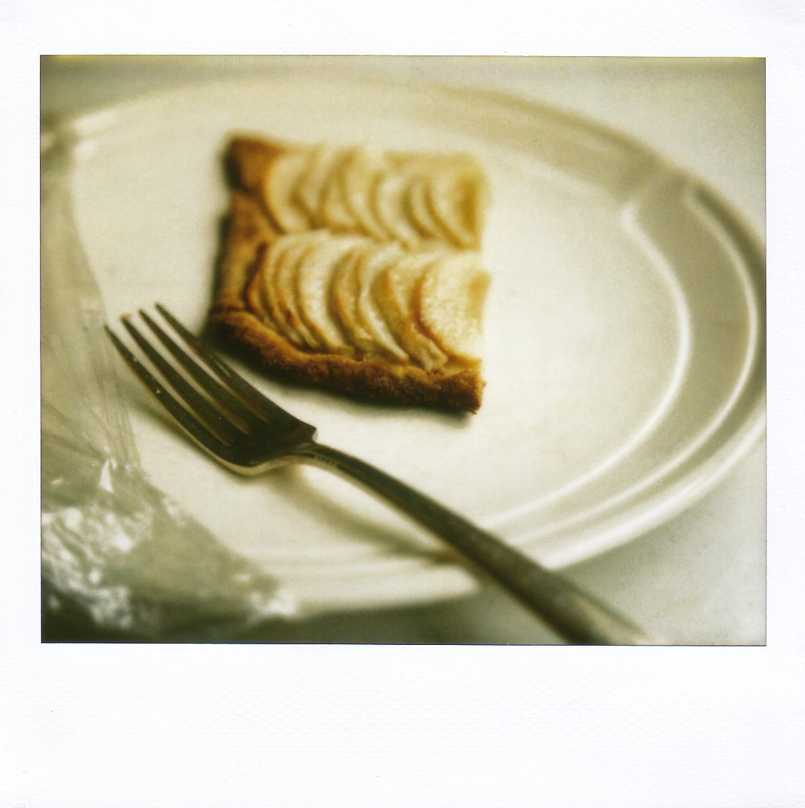
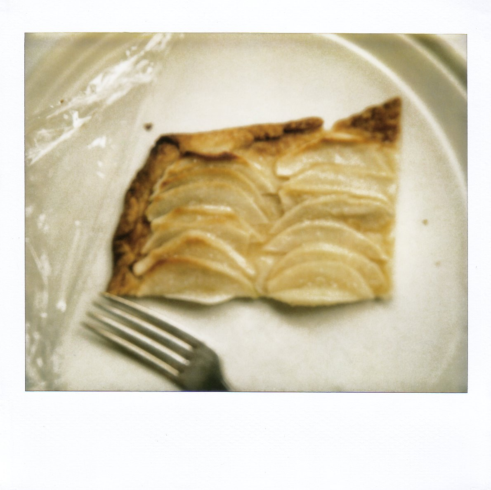

This old thing
So, have you eaten your boiled kale yet? Because dessert is ready, but you have to finish your vegetables before you can have any. That’s how it works.

I would like to introduce my new favorite dessert. Which, conveniently, is also the most ridiculously easy apple tart I have ever made. Isn’t it charming? In a rustic, “oh, this old thing?” sort of way? It’s the edible equivalent of a dog-eared book: a little rough around the edges, rumpled here and there, but 100 percent lovable on the inside. It’s the kind of dessert that wants to be eaten in a red barn with a loft full of hay bales, or in a bed with flannel sheets, while the wind whistles outside. Unfortunately, I have neither a barn nor any flannel, but I’m working on it.
{kind=link}
I came to this recipe in a roundabout way. Namely, via a desire to learn to cook to rabbit. I don’t quite know where I got the idea, but a few weeks ago, it took hold of me. Rabbit is not exactly a popular meat choice, I know, but I had eaten it once before, in a restaurant, and though I had to struggle to keep my thoughts from drifting toward Beatrix Potter, Peter Rabbit, and Flopsy, Mopsy, and Cotton-tail, it was very, very delicious. I had been wanting to try it at home, but I was a little afraid. I needed a partner in crime, or in whatever sort of deviant activity rabbit cookery constitutes. I happened to mention this to my friend Carla, and much to my delight, her eyes lit up immediately. The wheels were officially in motion! Then, not long after, this beauty happened to glue itself to my hands at the bookstore – books can be so needy, especially the pretty ones – and lo and behold, it offered an entire menu built around roasted rabbit. Clearly, it was fate. The menu began with a spinach cake, a savory sort of custard-meets-frittata, and then moved on to rabbit rubbed with crème fraîche and mustard, parsnips roasted in olive oil, and, finally, a free-form apple tart. Hubba hubba.
So last Wednesday night, we gathered around Carla’s stove and put it all together, and it certainly looked promising. I was planning, actually, to tell you today about the spinach cake recipe, or maybe even the rabbit. But to be perfectly honest, neither turned out particularly well. The rabbit was just okay – a little dry, and with strangely curdled pan juices. I hate to admit this, but we gave most of the leftover meat to Jack. He was the only one who really liked it. And the spinach cake, too, wasn’t quite right. It was oddly watery, and I could hardly muster half a slice. The parsnips, however, were delicious. You can never go wrong with high heat, olive oil, and root vegetables. But the apple tart, the afterthought of the evening, wound up stealing the entire show. In fact, Carla’s son Lluc proclaimed it the best tart he’s ever had. He ought to know, too: he doesn’t like cake, but he loves tarts and pies, so he’s eaten plenty of them.
Anyway, it’s all just as well, right? In a contest between spinach cake, roasted rabbit, and apple tart, I think we all know who the winner would be.

I like my fruit tarts simple, as you know, and this one is just that. You begin by rolling a batch of buttery dough into a large rectangle. (I used my usual recipe, not the one Tanis proposes; I am becoming such a rebel.) It doesn’t matter if the rectangle is a little irregular. In fact, it probably will be. That’s what it’s all about. It’s rustic, bless it, and that word excuses all flaws. Anyway, yes, so you roll it out, and then you slide it onto a rimmed baking sheet. Then you peel some apples and slice them thinly. Don’t throw out the cores, though. Instead, chuck them into a saucepan, add some sugar and water, and boil the mixture down until to a thick syrup: later, once strained, this is going to be your glaze. (Smart, isn’t it? It’s reason enough, really, to love David Tanis, notwithstanding our disappointment with the iffy rabbit and wonky spinach cake.) You fan the sliced apples atop the dough like cards in a game of Solitaire, and then you dust them with sugar. Then you bake the tart until the crust is golden brown, at which point the apples should be tender and fragrant. Let it cool a little bit, brush it with warm glaze, and that’s it. Dessert is done: a little sweet, a little tart, perfectly understated, buttery to just the right degree. We served it that night with honey-sweetened whipped cream, which I strongly suggest. I might also suggest, while we’re at it, that you play a game of Ticket to Ride afterward. Do not, however, play against our friend Sam, because he will beat you every time. He will be nice about it, but he will beat you. Every. Time.
{kind=link}
And should you have any of the tart left over at the end of the night, know that it’s just as good on its own – the next day, maybe, as an after-lunch sweet. So long, of course, as you eat your kale. Don’t forget that part.
Apple Tart
Adapted from A Platter of Figs and Other Recipes, by David Tanis
This is especially delicious with a little bit of honey-sweetened whipped cream.
For crust:
4 Tbsp. ice water, plus more as needed
3⁄4 tsp. apple cider vinegar
1 1⁄2 cups unbleached all-purpose flour
1 Tbsp. sugar
3⁄4 tsp. salt
9 Tbsp. (4 1⁄2 oz.) cold unsalted butter, cut into cubes
For filling:
6 to 7 medium Granny Smith apples (about 2 1⁄2 pounds)
1 cup sugar, plus more for sprinkling
1 cup water
To prepare the crust:
In a small bowl or measuring cup, combine 4 Tbsp. ice water and the cider vinegar.
In the bowl of a food processor, combine the flour, sugar, and salt. Pulse to blend. Add the butter, and pulse until the mixture resembles a coarse meal; there should be no pieces of butter bigger than a large pea. With the motor running, slowly add the water-vinegar mixture, processing just until moist clumps form. If you pick up a handful of the dough and squeeze it in your fist, it should hold together. If the dough seems a bit dry, add more ice water by the teaspoon, pulsing to incorporate. I sometimes find that 1 additional teaspoon is perfect.
Turn the dough out onto a wooden board or clean countertop, and gather it, massaging and pressing, until it just holds together. Shape it into a ball, and press it into a disk about 1 1⁄2 inches thick. If the disk cracks a bit at the edges, don’t worry; just pinch the cracks together as well as you can. Wrap the dough in plastic wrap, and then press it a bit more, massaging away any cracks around the edges, allowing the constraint of the plastic wrap to help you form it into a smooth disk. Refrigerate the wrapped dough for at least 2 hours. (Dough can be kept in the refrigerator for up to 4 days or frozen for up to 1 month. Thaw it in refrigerator overnight before using.) Before rolling it out, allow the dough to soften slightly at room temperature.
To assemble:
Set an oven rack to the middle position, and preheat the oven to 375°F.
On a lightly floured surface, roll the dough into a rectangle measuring approximately 11 by 16 inches. Transfer the dough to a rimmed baking sheet. Cover with plastic wrap, and refrigerate while you prepare the filling.
Peel the apples, and cut them into quarters. Cut out the cores, and toss them into a medium saucepan. To the cores, add 1 cup sugar and 1 cup water. Bring to a simmer over medium heat, stirring until the sugar dissolves. Simmer until the mixture has reduced to a thick syrup. Strain out and discard the solids, and set the syrup aside. Meanwhile, cut the apples into thin – roughly 1/8- to ¼-inch-thick – slices. Arrange the apple slices over the pastry in 5 rows, overlapping them like cards in solitaire. Sprinkle sugar generously over the apples. [I used a tablespoon – the eating kind, not the measuring kind – to do this, and I used about 1 slightly heaping spoonful for every 1 to 1 ½ rows of apple slices.] If you want to, fold up the edges of the dough a little bit, to form a small rim.
Bake the tart until the pastry is crisp and golden brown and the apples are beginning to color, about 35 to 45 minutes. [If your apples aren’t getting much color, don’t worry; if the pastry is looking right and the apples are at least tender, you should be fine. My apples stayed pretty pale.] Cool on the pan on a rack.
Just before serving, rewarm the glaze. Slide the tart from the pan onto a cutting board. Brush the apples with the warm glaze. Slice, and serve.
Yield: 6 to 8 servings